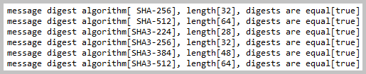

The sections of this project:
Java source code:

 package
kp
package
kp
Action:

 1. With the batch file
'01 MVN clean install + Run Application.bat' launch the
'Application'.
1. With the batch file
'01 MVN clean install + Run Application.bat' launch the
'Application'.
 1. The encrypted texts exchange with Elliptic-curve Cryptography.
1. The encrypted texts exchange with Elliptic-curve Cryptography.
The method
'kp.security.ecc.EllipticCurveCryptography::launch'.
 Console log from 'EllipticCurveCryptography::launch' method.
Console log from 'EllipticCurveCryptography::launch' method.
2. Computing the checksums. The method
'kp.security.ChecksumsComputing::launch'

Console log from 'ChecksumsComputing::launch' method.
3. The encryption and the decryption of ciphers with various algorithms, modes, and paddings.
3.1. The method
'kp.security.CiphersEncryptionAndDecryption::launchAesWithGcm'.
Console log from 'CiphersEncryptionAndDecryption::launchAesWithGcm' method.
3.2. The method
'kp.security.CiphersEncryptionAndDecryption::launchAesWithCbc'.

Console log from 'CiphersEncryptionAndDecryption::launchAesWithCbc' method.
3.3. The method
'kp.security.CiphersEncryptionAndDecryption::launchChaCha20'.

Console log from 'CiphersEncryptionAndDecryption::launchChaCha20' method.
3.4. The method
'kp.security.CiphersEncryptionAndDecryption::launchChaCha20WithPoly1305'.
Console log from 'CiphersEncryptionAndDecryption::launchChaCha20WithPoly1305' method.
3.5. The method
'kp.security.CiphersEncryptionAndDecryption::encryptToFileAndDecryptFromFile'.
Console log from 'CiphersEncryptionAndDecryption::encryptToFileAndDecryptFromFile' method.
4. Computing the digests with different algorithms.
The method
'kp.security.DigestsComputing::launch'.

Console log from 'DigestsComputing::launch' method.
5. Exchanging the public keys and the digest bytes over an insecure net.
The method
'kp.security.KeysAndDigestsExchanging::launch'.

Console log from 'KeysAndDigestsExchanging::launch' method.
6. Computing the Message Authentication Codes with different algorithms.
The method
'kp.security.MacsComputing::launch'.
Console log from 'MacsComputing::launch' method.
7. This is the secure class that does not permit subclassing.
The method
'kp.security.SecureClass::launch'.
Console log from 'SecureClass::launch' method.
8. Signing the signatures with different algorithms.
The method
'kp.security.SignaturesSigning::launch'.
Console log from 'SignaturesSigning::launch' method.
| AEAD | Authenticated Encryption with Associated Data |
| AES | Advanced Encryption Standard |
| CBC | Cipher Block Chaining |
| CRC | Cyclic Redundancy Check |
| DSA | Digital Signature Algorithm |
| ECC | Elliptic-Curve Cryptography |
| ECDH | Elliptic-Curve Diffie-Hellman |
| ECDSA | Elliptic-Curve Digital Signature Algorithm |
| GCM | Galois Counter Mode |
| HMAC | Keyed-Hash Message Authentication Code |
| MAC | Message Authentication Code |
| PKCS | Public Key Cryptography Standards |
| RSA | Ron Rivest, Adi Shamir, Leonard Adleman |
| SHA | Secure Hash Algorithm |